Request&Response
一、servlet路径写法
全路径匹配
以”/“开头， “/a” “/aa/bb”
<servlet-mapping> <servlet-name>MyServlet</servlet-name> <url-pattern>/a</url-pattern> </servlet-mapping>形如这种类型的，我们访问方式为:
http://localhost:8080/a或者http://localhost:8080/aa/bb半路径匹配
形如：
<servlet-mapping> <servlet-name>MyServlet</servlet-name> <url-pattern>/*</url-pattern> </servlet-mapping>形如这种类型的,我们访问方式为：
http://localhost:8080/a或者http://localhost:8080/8899/0000，其实*是通配符，可以匹配任意路径。但是，如果是这种：
<servlet-mapping> <servlet-name>MyServlet</servlet-name> <url-pattern>/a/*</url-pattern> </servlet-mapping>我们就需要需要这样访问：
http://localhost:8080/a/423或者http://localhost:8080/a/8899/0以扩展名匹配
写法：*.扩展名 *.aa *.bb *.do
<servlet-mapping> <servlet-name>MyServlet</servlet-name> <url-pattern>*.do</url-pattern> </servlet-mapping>我们访问方式为：
http://localhost:8080/a.do或者http://localhost:8080/8899/0000.do。
二、ServletContext
Servlet 上下文
每个web工程都只有一个servletContext对象，说白了也就是不管在哪个servlet里面，获取到的这个类的对象都是同一个。
有什么用？
可以获取全局配置参数
<!--全局参数，哪个Servlet都可以拿，ServletContext--> <context-param> <param-name>address</param-name> <param-value>北京</param-value> </context-param>获取全局参数(代码书写)
protected void doGet(HttpServletRequest req, HttpServletResponse resp) throws ServletException, IOException { ServletContext context = getServletContext(); String MyServletContext = context.getInitParameter("address"); System.out.println("这是MyServletContext01 address : " + MyServletContext); }每个servlet都拿的一样（代码如下）
//java代码： //MyServletContext.java public class MyServletContext extends HttpServlet { @Override protected void doGet(HttpServletRequest req, HttpServletResponse resp) throws ServletException, IOException { ServletContext context = getServletContext(); String MyServletContext = context.getInitParameter("address"); System.out.println("这是MyServletContext01 address : " + MyServletContext); } @Override protected void doPost(HttpServletRequest req, HttpServletResponse resp) throws ServletException, IOException { doGet(req, resp); } } ------------------------------------------------------------------------------- //MyServletContext2.java public class MyServletContext2 extends HttpServlet { @Override protected void doGet(HttpServletRequest req, HttpServletResponse resp) throws ServletException, IOException { ServletContext context = getServletContext(); String MyServletContext = context.getInitParameter("address"); System.out.println("这是MyServletContext02 address : " + MyServletContext); } @Override protected void doPost(HttpServletRequest req, HttpServletResponse resp) throws ServletException, IOException { doGet(req, resp); } }web.xml
<!DOCTYPE web-app PUBLIC "-//Sun Microsystems, Inc.//DTD Web Application 2.3//EN" "http://java.sun.com/dtd/web-app_2_3.dtd" > <web-app> <!--全局参数，哪个Servlet都可以拿，ServletContext--> <context-param> <param-name>address</param-name> <param-value>北京</param-value> </context-param> <servlet> <servlet-name>MyServletContext</servlet-name> <servlet-class>com.yage.myservlet.MyServletContext</servlet-class> </servlet> <servlet-mapping> <servlet-name>MyServletContext</servlet-name> <url-pattern>/MyServletContext</url-pattern> </servlet-mapping> <servlet> <servlet-name>MyServletContext2</servlet-name> <servlet-class>com.yage.myservlet.MyServletContext2</servlet-class> </servlet> <servlet-mapping> <servlet-name>MyServletContext2</servlet-name> <url-pattern>/MyServletContext2</url-pattern> </servlet-mapping> </web-app>运行结果：
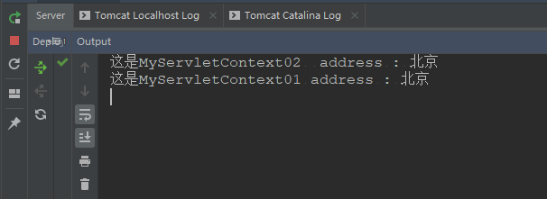
可以获取web中的资源
比如可以获取到config.properties中的数据
#config.properties address = beijing//java public class MyServletContext03 extends HttpServlet { @Override protected void doGet(HttpServletRequest req, HttpServletResponse resp) throws ServletException, IOException { Properties properties = new Properties(); InputStream inputStream = new FileInputStream("F:\\TootleDevolpment\\workspaces\\HelloServlet\\src\\main\\resources\\config.properties"); properties.load(inputStream); String address = properties.getProperty("address"); System.out.println("config.properties中的 address："+address); } @Override protected void doPost(HttpServletRequest req, HttpServletResponse resp) throws ServletException, IOException { doGet(req,resp); } }web.xml
<!DOCTYPE web-app PUBLIC "-//Sun Microsystems, Inc.//DTD Web Application 2.3//EN" "http://java.sun.com/dtd/web-app_2_3.dtd" > </web-app> <servlet> <servlet-name>MyServletContext03</servlet-name> <servlet-class>com.yage.myservlet.MyServletContext03</servlet-class> </servlet> <servlet-mapping> <servlet-name>MyServletContext03</servlet-name> <url-pattern>/MyServletContext03</url-pattern> </servlet-mapping> <web-app>运行结果：
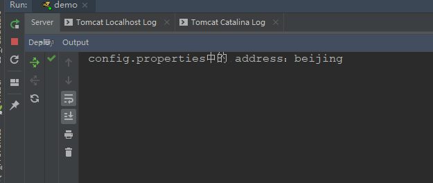
利用ServletContext获取到路径
public class MyServletContext04 extends HttpServlet { @Override protected void doGet(HttpServletRequest req, HttpServletResponse resp) throws ServletException, IOException { //test01(); test02(); } private void test02() { try { Properties properties = new Properties(); ServletContext context = getServletContext(); InputStream inputStream = context.getResourceAsStream("WEB-INF/classes/config.properties"); properties.load(inputStream); String address = properties.getProperty("address"); System.out.println("config.properties中的 address04："+address); inputStream.close(); } catch (Exception e) { e.printStackTrace(); } } private void test01() throws IOException { Properties properties = new Properties(); ServletContext context = getServletContext(); String path = context.getRealPath("WEB-INF/classes/config.properties"); System.out.println(path); InputStream inputStream = new FileInputStream(path); properties.load(inputStream); String address = properties.getProperty("address"); System.out.println("config.properties中的 address："+address); } @Override protected void doPost(HttpServletRequest req, HttpServletResponse resp) throws ServletException, IOException { doGet(req,resp); } }web.xml
<!DOCTYPE web-app PUBLIC "-//Sun Microsystems, Inc.//DTD Web Application 2.3//EN" "http://java.sun.com/dtd/web-app_2_3.dtd" > <web-app> <servlet> <servlet-name>MyServletContext04</servlet-name> <servlet-class>com.yage.myservlet.MyServletContext03</servlet-class> </servlet> <servlet-mapping> <servlet-name>MyServletContext04</servlet-name> <url-pattern>/MyServletContext04</url-pattern> </servlet-mapping> </web-app>这里说明一下：
context.getRealPath(“WEB-INF/classes/config.properties”);
context.getResourceAsStream获取地址，也是获取相对路径
获取到的是tomcat根目录下的config.properties文件，也就是：
F:\Tomcat\apache-tomcat-7.0.92\webapps\ROOT\WEB-INF\classes\config.properties
cassloader获取系统资源文件
public class MyServletContext04 extends HttpServlet { @Override protected void doGet(HttpServletRequest req, HttpServletResponse resp) throws ServletException, IOException { test03(); } private void test03() { try { Properties properties = new Properties(); InputStream stream = this.getClass().getClassLoader().getResourceAsStream("config.properties"); System.out.println(this.getClass().getClassLoader()); properties.load(stream); String address = properties.getProperty("address"); System.out.println("config.properties中的 address05："+address); stream.close(); } catch (Exception e) { e.printStackTrace(); } }config.properties
address = beijing运行结果：
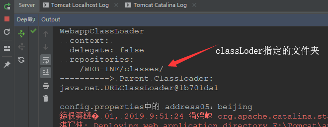
使用Servlet存取数据（共享数据）
通过下面的案例来说明
基础版

代码如下：
public class LoginServlet extends HttpServlet { protected void doGet( HttpServletRequest req, HttpServletResponse resp) throws ServletException, IOException { String username = req.getParameter("username"); String password = req.getParameter("password"); System.out.println("username:"+username+"\n"+"password:"+password); if ("admin".equals(username) && "123".equals(password)) { System.out.println("登陆成功"); } else { System.out.println("登陆失败"); } } @Override protected void doPost(HttpServletRequest req, HttpServletResponse resp) throws ServletException, IOException { doGet(req,resp); } }web.xml
<!DOCTYPE web-app PUBLIC "-//Sun Microsystems, Inc.//DTD Web Application 2.3//EN" "http://java.sun.com/dtd/web-app_2_3.dtd" > <web-app> <display-name>Archetype Created Web Application</display-name> <servlet> <servlet-name>LoginServlet</servlet-name> <servlet-class>com.yage.myservlet.LoginServlet</servlet-class> </servlet> <servlet-mapping> <servlet-name>LoginServlet</servlet-name> <url-pattern>/LoginServlet</url-pattern> </servlet-mapping> </web-app>index.html
<!DOCTYPE html> <html> <body> <h2>Hello World!</h2> <form action="LoginServlet" method="get"> <input type="text" name="username"/><br> <br> <input type="password" name="password"/> <br> <br> <input type="submit" value="登录"/> </form> </body> </html>注意，当我们在写好上面的东西时，我们即将项目发布到服务器，发现报404错误，这时，我们检查我们写好的Servlet如果一切都没有问题这是我们试试将项目清理下，也就是将项目的target删除，重新发布，可能会解决你的问题。
运行结果如下：
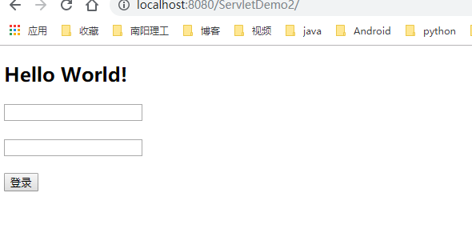
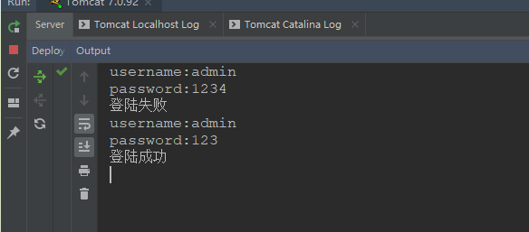
用HttpServletResponse响应到浏览器
代码如下：
public class LoginServlet extends HttpServlet { protected void doGet( HttpServletRequest req, HttpServletResponse resp) throws ServletException, IOException { String username = req.getParameter("username"); String password = req.getParameter("password"); System.out.println("username:"+username+"\n"+"password:"+password); PrintWriter writer = resp.getWriter(); if ("admin".equals(username) && "123".equals(password)) { writer.println("Log in successfully"); System.out.println("Log in successfully"); System.out.println(); } else { writer.println("Logon failure"); System.out.println("Logon failure"); System.out.println(); } } @Override protected void doPost(HttpServletRequest req, HttpServletResponse resp) throws ServletException, IOException { doGet(req,resp); } }<!DOCTYPE html> <html> <body> <h2>Hello World!</h2> <form action="LoginServlet" method="get"> <input type="text" name="username"/><br> <br> <input type="password" name="password"/> <br> <br> <input type="submit" value="Sign in"/> </form> </body> </html><!DOCTYPE web-app PUBLIC "-//Sun Microsystems, Inc.//DTD Web Application 2.3//EN" "http://java.sun.com/dtd/web-app_2_3.dtd" > <web-app> <display-name>Archetype Created Web Application</display-name> <servlet> <servlet-name>LoginServlet</servlet-name> <servlet-class>com.yage.myservlet.LoginServlet</servlet-class> </servlet> <servlet-mapping> <servlet-name>LoginServlet</servlet-name> <url-pattern>/LoginServlet</url-pattern> </servlet-mapping> </web-app>运行结果：

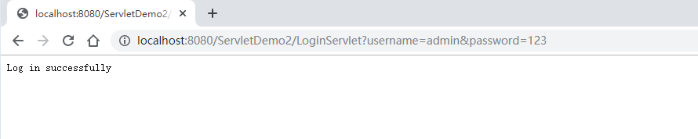
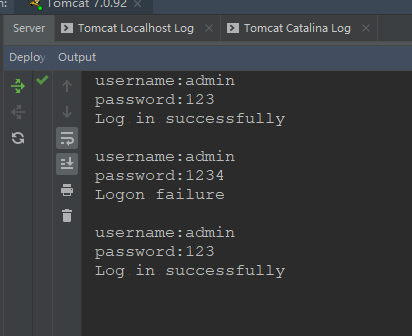
前面两种方法都是通过Request，或者是Response，来进行操作，接下俩我们通过Servlet来对Servlet进行操作。
思路如下：
代码如下：
public class LoginServlet extends HttpServlet { protected void doGet( HttpServletRequest req, HttpServletResponse resp) throws ServletException, IOException { String username = req.getParameter("username"); String password = req.getParameter("password"); System.out.println("username:"+username+"\n"+"password:"+password); PrintWriter writer = resp.getWriter(); if ("admin".equals(username) && "123".equals(password)) { writer.println("Log in successfully"); System.out.println("Log in successfully"); Object obj = getServletContext().getAttribute("count"); int totalCount =0; if (obj != null) { totalCount = (int) obj; } System.out.println("已知登陆成功的次数是："+totalCount); getServletContext().setAttribute("count",totalCount+1); //成功就跳转到login_success.html //设置状态码为 302 ，是因为状态码302的含义是，重新定位到新地址 resp.setStatus(302); resp.setHeader("Location","login_success.html"); System.out.println(); } else { writer.println("Logon failure"); System.out.println("Logon failure"); System.out.println(); } } @Override protected void doPost(HttpServletRequest req, HttpServletResponse resp) throws ServletException, IOException { doGet(req,resp); } }public class CountServlet extends HttpServlet { @Override protected void doGet(HttpServletRequest req, HttpServletResponse resp) throws ServletException, IOException { //1.获取到LoginServlet中的totalCount int count = (int) getServletContext().getAttribute("count"); resp.getWriter().write("The number of successful logins to obtain the website is :"+count); } @Override protected void doPost(HttpServletRequest req, HttpServletResponse resp) throws ServletException, IOException { doGet(req,resp); } }<!DOCTYPE web-app PUBLIC "-//Sun Microsystems, Inc.//DTD Web Application 2.3//EN" "http://java.sun.com/dtd/web-app_2_3.dtd" > <web-app> <display-name>Archetype Created Web Application</display-name> <servlet> <servlet-name>LoginServlet</servlet-name> <servlet-class>com.yage.myservlet.LoginServlet</servlet-class> </servlet> <servlet-mapping> <servlet-name>LoginServlet</servlet-name> <url-pattern>/LoginServlet</url-pattern> </servlet-mapping> <servlet> <servlet-name>CountServlet</servlet-name> <servlet-class>com.yage.myservlet.CountServlet</servlet-class> </servlet> <servlet-mapping> <servlet-name>CountServlet</servlet-name> <url-pattern>/CountServlet</url-pattern> </servlet-mapping> </web-app><!DOCTYPE html> <html> <body> <h2>Hello World!</h2> <form action="LoginServlet" method="get"> <input type="text" name="username"/><br> <br> <input type="password" name="password"/> <br> <br> <input type="submit" value="Sign in"/> </form> </body> </html><!DOCTYPE html> <html> <body> <h2>success login</h2> <h2><a href="CountServlet">Get the number of successful website logins</a></h2> </body> </html>运行结果：
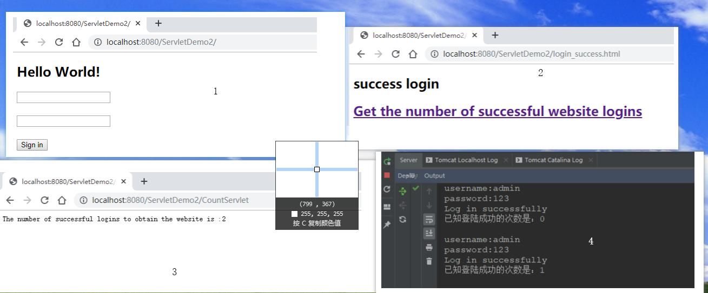
注意：在HTML中
<a href="CountServlet">Get the number of successful website logins</a>和<form action="LoginServlet" method="get">中的action和href中的数据是应对web.xml中的<url-pattern>/CountServlet</url-pattern>和<url-pattern>/LoginServlet</url-pattern>中的数据，而且因为我们通过http://localhost:8080/ServletDemo2/CountServlet和http://localhost:8080/ServletDemo2/LoginServlet以及http://localhost:8080/ServletDemo2/index.html和http://localhost:8080/ServletDemo2/login_success.html都能访问到相应的文件，所以，他们应该在同一级目录下，所以我们写相对路径时只需要写上相应的文件名即可。
三、ServletContext的生命周期
何时创建，何时销毁？
创建：服务器启动时，会托管每一个web程序，创建一个ServletContext对象
销毁：从服务器移出托管，或者是关闭服务器
ServletContext 的作用范围只要在这个项目里面都可以取，对象不同，所以取不到。
四、HttpServletRequest
向服务器发起请求
可以获取头信息
public class MyServletRequest extends HttpServlet { @Override protected void doGet(HttpServletRequest req, HttpServletResponse resp) throws ServletException, IOException { Enumeration<String> headerNames = req.getHeaderNames(); while (headerNames.hasMoreElements()) { //第一次运行 String header = req.getHeader(headerNames.nextElement()); System.out.println(headerNames.nextElement()+":"+header); //第二次运行 System.out.println(headerNames.nextElement()+":"); } } @Override protected void doPost(HttpServletRequest req, HttpServletResponse resp) throws ServletException, IOException { doGet(req,resp); } }web.xml
<!DOCTYPE web-app PUBLIC "-//Sun Microsystems, Inc.//DTD Web Application 2.3//EN" "http://java.sun.com/dtd/web-app_2_3.dtd" > <web-app> <servlet> <servlet-name>MyServletRequest</servlet-name> <servlet-class>com.yage.myservlet.MyServletRequest</servlet-class> </servlet> <servlet-mapping> <servlet-name>MyServletRequest</servlet-name> <url-pattern>/MyServletRequest</url-pattern> </servlet-mapping> </web-app>运行结果：
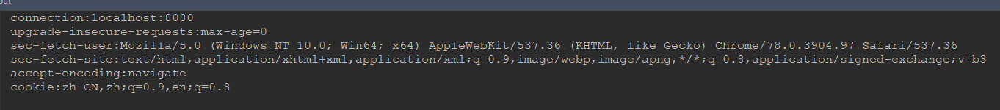
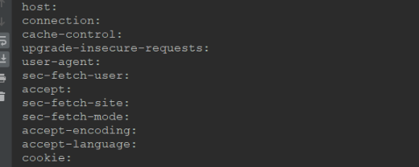
一些好玩的方法：
System.out.println(req.getLocale()); //获取请求的IP地址 System.out.println(req.getLocalAddr()); System.out.println(req.getRequestURI());
HttpServletRequest获取用户提交的数据
public class MyServletRequest extends HttpServlet { @Override protected void doGet(HttpServletRequest req, HttpServletResponse resp) throws ServletException, IOException { String name = req.getParameter("name"); String address = req.getParameter("address"); System.out.println("name==" + name + "\n" + "address==" + address);
Map<String, String[]> parameterMap = req.getParameterMap();
//map集合的两种遍历方法，回顾一下
Set<String> stringSet = parameterMap.keySet();
for (String key : stringSet) {
String[] value = parameterMap.get(key);
System.out.println( key + "\n" + value[0]);
}
System.out.println("----------------------");
Set<Map.Entry<String, String[]>> entrySet = parameterMap.entrySet();
for (Map.Entry<String, String[]> entry : entrySet) {
String key = entry.getKey();
String[] value = entry.getValue();
System.out.println( key + "====" + value[0]);
}
}
@Override
protected void doPost(HttpServletRequest req, HttpServletResponse resp) throws ServletException, IOException {
doGet(req,resp);
}}
web.xml
```xml
<!DOCTYPE web-app PUBLIC
"-//Sun Microsystems, Inc.//DTD Web Application 2.3//EN"
"http://java.sun.com/dtd/web-app_2_3.dtd" >
<web-app>
<servlet>
<servlet-name>MyServletRequest</servlet-name>
<servlet-class>com.yage.myservlet.MyServletRequest</servlet-class>
</servlet>
<servlet-mapping>
<servlet-name>MyServletRequest</servlet-name>
<url-pattern>/MyServletRequest</url-pattern>
</servlet-mapping>
</web-app>运行结果：
首先在浏览器地址栏输入： http://localhost:8080/MyServletRequest?name=kuiba&address=shanghai 控制台输出的值为：
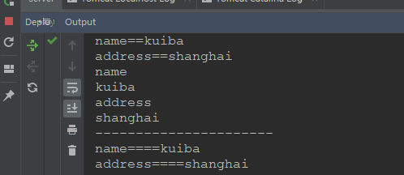
细心的同学发现， Map<String, String[]> parameterMap = req.getParameterMap();中Map的值是一个String[]数组，为什么呢？，一般来说我们传参都是 name=kuiba&address=shanghai ，那是为什么呢？
我们要知道开发Servlet的工程师比我们优秀太多就行了，开个玩笑！嘻嘻，O(∩_∩)O！
不过我们要知道，存在即有它的道理，定义为String[]的原因是因为，我们传参时，大多数都是上面哪种方法，但时也有另外一种，如下
name=kuiba&name=lisi&address=shanghai&address=beijing
乱码问题
如果我们是直接下载官网的Tomcat，那么，它默认的解码方式是”ISO-8859-1”，而我们用的是”UTF-8”，所以解析出阿来的一定是乱码，因为编码方式和解码方式不一样，所以会乱码！
如果我们使用get方式请求，那么我们可以这样写来进行转码
protected void doGet( HttpServletRequest req, HttpServletResponse resp) throws ServletException, IOException { String username = req.getParameter("username"); String password = req.getParameter("password"); username = new String(username.getBytes("ISO-8859-1"), "UTF-8"); System.out.println(username+"\n"+ password); }通过字符流来进行转码，我们可以让ISO-8859-1的编码方式转换为UTF-8，从而达到解决乱码的效果
还有一种是更改Tomcat的配置文件，就是Tomcat目录下conf里面的server.xm中的
<Connector port="8080" protocol="HTTP/1.1"connectionTimeout="20000"redirectPort="8443""/>改为
<Connector port="8080" protocol="HTTP/1.1"connectionTimeout="20000"redirectPort="8443" URIEncoding="UTF-8"/>如果我们使用post方法
protected void doGet( HttpServletRequest req, HttpServletResponse resp) throws ServletException, IOException { req.setCharacterEncoding("UTF-8"); String username = req.getParameter("username"); String password = req.getParameter("password"); System.out.println(username+"\n"+ password); }一定要在得到内容之前设置，该方法对get不生效，因为get请求实在地址栏中，而req.setCharacterEncoding(“UTF-8”);是设置请求体中的编码方式，所以没用。
五、HttpServletResponse
相应服务器请求，负责返回数据给客户端
简单使用
@Override protected void doGet(HttpServletRequest req, HttpServletResponse resp) throws ServletException, IOException { //以字符流形式写数据 resp.getWriter().write("<h1>hello response(●ˇ∀ˇ●)</h2>"); //以字节流形式写数据 resp.getOutputStream().write("hello response".getBytes()); //设置状态码 resp.setStatus(302); //设置响应头 resp.setHeader("",""); //设置响应的内容类型及编码。 resp.setContentType(""); }resp.setContentType(“”);方法里面需要写的东西：
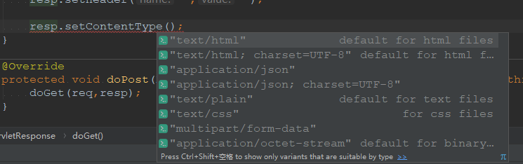
乱码问题
如果响应的数据中有中文，那么就有可能会乱码
以字符流
@Override protected void doGet(HttpServletRequest req, HttpServletResponse resp) throws ServletException, IOException { //因为默认编码为ISO-8859-1,所以我们需要转码 resp.setContentType("text/html; charset=UTF-8"); resp.getWriter().write("<h1>hello response哈哈</h1>"); }以字节流
@Override protected void doGet(HttpServletRequest req, HttpServletResponse resp) throws ServletException, IOException { //要想不乱码， resp.setContentType("text/html; charset=UTF-8"); resp.getOutputStream().write("hello response哈哈".getBytes("UTF-8")); }不管是字节流还是字符流用
resp.setContentType(“text/html; charset=UTF-8”);就可以直接搞定。
因为这句话是告诉浏览器用什么解码，且然传输的数据也是相应的编码。
演练下载资源
<!DOCTYPE html> <head> <meta charset="UTF-8" /> </head> <html> <body> <h2>Hello World!</h2> 让tomcat的默认下载器下载： <a href="download/aa.jpg">aa.jpg</a><br> <a href="download/bb.txt">bb.txt</a><br> <a href="download/cc.rar">cc.rar</a><br> </body> </html>无需写任何代码，直接就能下载，原因是Tomcat提供的默认的Servlet –》defaultServlet，专门用于处理放在tomcat服务器上的静态资源。
自己动手写代码来提供下载
public class MyDownload extends HttpServlet { @Override protected void doGet(HttpServletRequest req, HttpServletResponse resp) throws ServletException, IOException { String filename = req.getParameter("filename"); //获取这个文件在Tomcat上的对对路径地址 String path = getServletContext().getRealPath("download/"+filename); //让浏览器收到这份资源的时候，以下载的方式提醒用户，而不是直接在浏览器上展示。 resp.setHeader("Content-Disposition", "attachment; filename="+filename); //转化为输入流 InputStream is = new FileInputStream(path); //将文件展示在浏览器 OutputStream outputStream = resp.getOutputStream(); int len =0; byte[] buffer = new byte[1024]; while ((len = is.read(buffer)) != -1) { outputStream.write(buffer,0,len); } outputStream.close(); is.close(); } @Override protected void doPost(HttpServletRequest req, HttpServletResponse resp) throws ServletException, IOException { doGet(req, resp); } }index.html
<!DOCTYPE html> <head> <meta charset="UTF-8" /> </head> <html> <body> <h2>Hello World!</h2> 让tomcat的默认下载器下载：<br> <a href="download/aa.jpg">aa.jpg</a><br> <a href="download/bb.txt">bb.txt</a><br> <a href="download/cc.rar">cc.rar</a><br> 手动编码提供下载下载：<br> <a href="MyDownload?filename=aa.jpg">aa.jpg</a><br> <a href="MyDownload?filename=bb.txt">bb.txt</a><br> <a href="MyDownload?filename=cc.rar">cc.rar</a><br> </body> </html>web.xml
<!DOCTYPE web-app PUBLIC "-//Sun Microsystems, Inc.//DTD Web Application 2.3//EN" "http://java.sun.com/dtd/web-app_2_3.dtd" > <web-app> <servlet> <servlet-name>MyDownload</servlet-name> <servlet-class>com.yage.myservlet.MyDownload</servlet-class> </servlet> <servlet-mapping> <servlet-name>MyDownload</servlet-name> <url-pattern>/MyDownload</url-pattern> </servlet-mapping> </web-app>
六、总结
ServletContext【重点】
作用：
- 获取全局参数
- 获取工程里面的资源
- 资源共享
一个Servlet只有一个ServletContext，在服务器启动的时候创建，服务器关闭的时候销毁
HttpServletRequest【重点】
获取请求头
获取提交过来的数据
HttpServletResponse【重点】
负责输出数据到客户端，其实就是对之前请求做出响应
中文乱码问题【重点】
下载案例